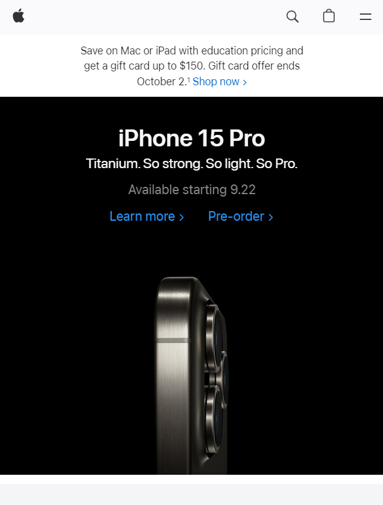

Hick's Law
Google
google.com
Google keeps the decisions required to enter a keyword to a minimum by eliminating any additional content that could distract from the act of typing a keyword or require additional decision-making.
Fitt's Law
Apple
apple.com

Apple's website has a large target area for the main navigation menu, making it easy for users to quickly move their mouse to the menu and select a menu item.
Rule of Thirds
Amazon
amazon.com
Amazon’s homepage uses the rule of thirds to a T. At the top of their homepage to the middle of the page, they use nine even boxes with text and content. Towards the middle of the page, they have a horizontal wide box for rotating, smaller images. Then towards the end of the page, they rotate one line of three even boxes with one line of the horizontal wide box. Another three boxes, one line of the horizontal box, and you reach the end of their webpage.